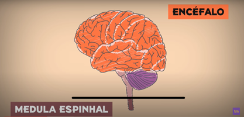

No encontro entre matemática, física, química, biologia, psicologias, filosofia e artes, as neurociências fascinam
o público pela possibilidade da compreensão dos mecanismos das emoções, pensamentos e ações, e doenças.
Pensando nisso o grupo da turma 413 referente a esse trabalho elaborou uma pesquisa com o intuito
de esclarecer um pouco mais sobre a neurociencia para os leitores , trasendo assim seus conceitos, metodos
de pesquisa e curiosidades sobre o assunto.
A neurociência é uma ciência que estuda de uma forma ampla e completa sistema nervoso que este intrinsecamente relacionado
com oque acontece em nosso corpo, como os pensamentos, sentimentos, emoções, e até mesmo a nossa forma de agir
O que é a paixão: A paixão é um dos sentimentos humanos que são mais intensos e profundos, marcados por um grande
interesse e atração da pessoa apaixonada por alguém.
A paixão por sua vez é capaz de alterar os aspectos comportamentais de uma pessoa, passando a demonstrar um carinho e
admiração excessivo por aquela pessoa que lhe causa a paixão.
Àreas do cerebro que são afetadas:
Entre todas as áreas cerebrais em que a paixão e o amor são estimuladas, algumas se destacam forte-mente, sendo uma
delaso núcleo accumbrens uma pequena região do nosso cerebro no qual está ligada a dopamina, um neutotrasmissor que
estimula arecompensa do nosso cérebro, trasemdo para nos o prazer.
O aumento da quantidade de domina liberada no nosso cérebro nas primeiras fazes da paixão são muito grandes, assim
criando um circo de recompensas muito alto e também um ciclo vícioso.
Muitos o consideram o órgão mais importante do corpo humano, pois ele é o principal componente do sistema nervoso
central. Ele é responsável por todas ações voluntarias e involuntárias do nosso corpo Também possui cerca de 86
bilhões de neurônios, que possibilitam o corpo de reconhecer estímulos do ambiente ou do próprio organismoO cérebro
pesa cerca de 1,5KG.
são divididos em dois tipos:
Dividido entre Encéfalo e Medula Espinhal:
É o órgão mais importante do nosso SNC, consome cerca de 350Kcal por dia (equivale como uma corrida de 30 minutos).
É dividido em dois Hemisférios:
Esquerdo:Responsável por ser mais analítico, controla a capacidade da escrita, leitura e raciocínio
É chamado de “Setor Lógico” Direito: Responsável por ser CRIATIVO, controla capacidade de reconhecer rostos
e objetos, consciência musical, imaginação ou artística.
Mesencéfalo:É a menor parte do T.E e é responsável pelos reflexos visuais e auditivos
Curiosidades sobre o cérebro
Ouvir música pode ter diversos efeitos no corpo. Dependendo da música há quem jure que se sinta
mais feliz ou relaxado, outros não gostam de certos sons.Mas o que acontece no nosso cérebro quando
estamos ouvindo música? Tecnicamente, quando começamos a ouvir música, as ondas de rádio que são
emitidas por um instrumento, alto-falantes ou fones de ouvido fazem nossos tímpanos entrarem e saírem.
Esse movimento é traduzido em uma cadeia de sinais eletroquímicos que atingem o córtex auditivo e, a
partir daí o som é analisado em relação ao tom, ritmo, volume, timbre, harmonia, localização espacial
e ressonância
O córtex auditivo é responsável por distinguir volume e tom. Também é ele o responsável por entender
o ritmo. Quando o som entra pelos ouvidos, outras áreas do cérebro também são ativadas: movimento,
memória, atenção, emoção...Diversos estudos já mostraram que a música pode ter efeitos positivos no
cérebro liberando dopamina, neurotransmissor mais conhecido como "hormônio do prazer". Apesar disso, a
música afeta as pessoas de maneiras diferentes.